Long-horizon robot video world models
Efficient Training-Free Context Scheduling for Long-Horizon Robot Video World Models
Keep the scene. Follow the latest state. Forget stale generated history.
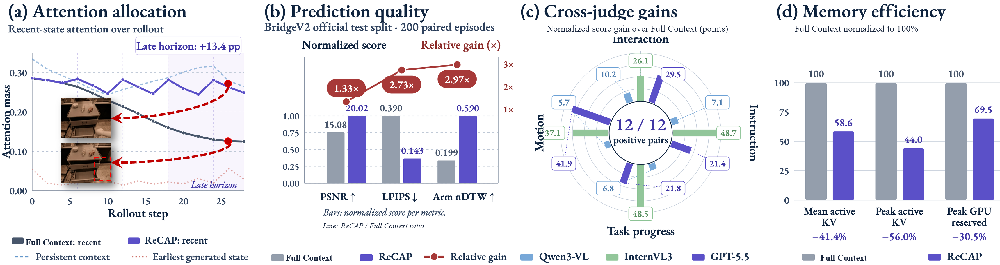
Why context scheduling?
More history is not always better.
Autoregressive robot video world models keep appending their own predictions to the context. Over long rollouts, stale generated states compete with recent visual–action states for a finite attention budget, causing structural omissions, motion distortion, and drift.
ReCAP—Receding Context with Anchor Preservation—reorganizes that context at inference time. It preserves the initial scene anchor, retains a contiguous window of recent visual–action blocks, and evicts stale middle history. The tokenizer, world model, and decoder remain completely frozen.
Method
A bounded context with distinct memory roles.
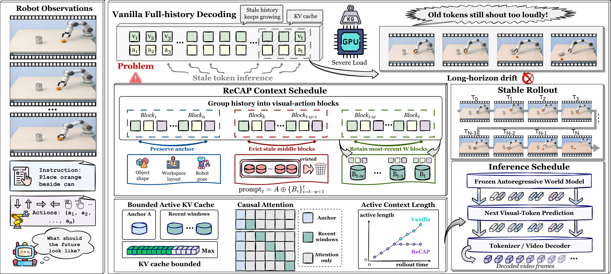
Preserve the anchor
Keep real initial observations as a stable reference for scene identity, robot morphology, and workspace layout.
Retain recent dynamics
Maintain the latest complete visual–action blocks so local motion and action conditioning remain coherent.
Evict stale history
Remove older generated blocks before they dilute recent-state attention or consume an unbounded KV cache.
Inside one autoregressive step
Schedule first, then predict.
ReCAP changes only which existing tokens remain active. Generation, tokenization, and model weights are untouched.
Interactive context timeline
What is active at rollout step ?
Full ContextRetains every generated block
ReCAPOne scene anchor + one dynamic anchor + six recent blocks
Scene anchor
Dynamic anchor
Recent block
Stale history
At step 64, ReCAP uses 73.3% fewer active tokens while preserving complete visual–action blocks.
Evidence
Quality, mechanism, and systems gains.
Main results
ReCAP across models and environments
Paired episodes use identical sampling seeds and action sequences. Better values are bold.
| Context strategy | BridgeV2 | RT-1 | LIBERO-90 | CALVIN | ||||||||
|---|---|---|---|---|---|---|---|---|---|---|---|---|
| LPIPS ↓ | nDTW ↑ | VLM ↑ | LPIPS ↓ | nDTW ↑ | VLM ↑ | LPIPS ↓ | nDTW ↑ | VLM ↑ | LPIPS ↓ | nDTW ↑ | VLM ↑ | |
| RLVR-World | ||||||||||||
| Full Context | 0.390 | 0.199 | 64.8 | 0.251 | 0.276 | 28.1 | 0.269 | 0.551 | 58.9 | 0.287 | 0.528 | 56.4 |
| ReCAP (ours) | 0.143 | 0.590 | 72.6 | 0.201 | 0.558 | 71.9 | 0.217 | 0.631 | 67.8 | 0.234 | 0.607 | 65.1 |
| Δ | −0.247 | +0.391 | +7.8 | −0.050 | +0.282 | +43.8 | −0.052 | +0.080 | +8.9 | −0.053 | +0.079 | +8.7 |
| iVideoGPT | ||||||||||||
| Full Context | 0.254 | 0.587 | 61.3 | 0.267 | 0.561 | 58.6 | 0.283 | 0.529 | 55.7 | 0.301 | 0.506 | 53.2 |
| ReCAP (ours) | 0.203 | 0.665 | 70.1 | 0.215 | 0.639 | 67.6 | 0.231 | 0.609 | 64.5 | 0.248 | 0.586 | 61.9 |
| Δ | −0.051 | +0.078 | +8.8 | −0.052 | +0.078 | +9.0 | −0.052 | +0.080 | +8.8 | −0.053 | +0.080 | +8.7 |
| RobotAlign-R1 | ||||||||||||
| Full Context | 0.226 | 0.634 | 67.2 | 0.239 | 0.608 | 64.5 | 0.255 | 0.576 | 61.8 | 0.272 | 0.554 | 59.1 |
| ReCAP (ours) | 0.178 | 0.709 | 75.8 | 0.190 | 0.683 | 73.1 | 0.206 | 0.654 | 70.2 | 0.222 | 0.634 | 67.4 |
| Δ | −0.048 | +0.075 | +8.6 | −0.049 | +0.075 | +8.6 | −0.049 | +0.078 | +8.4 | −0.050 | +0.080 | +8.3 |
Δ denotes the mean paired improvement from Full Context to ReCAP.
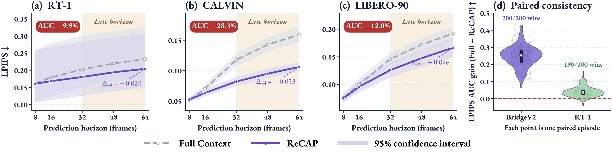
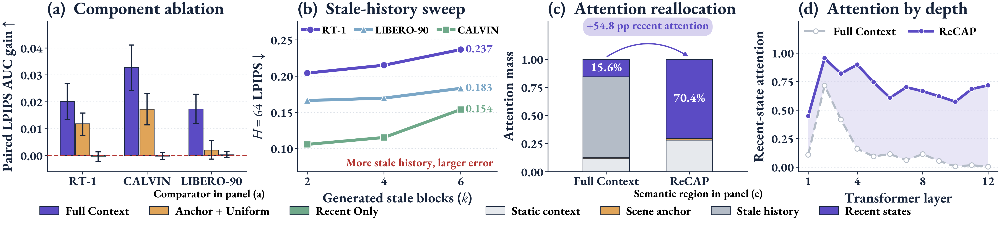
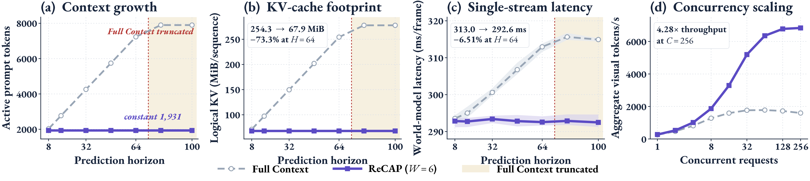
Qualitative rollouts
Same observations. Same actions. Different context.
Each animation synchronizes ground truth, Full Context, and ReCAP over a 64-frame visual open-loop rollout. LIBERO-90 is shown in canonical upright orientation.
RT-1 evaluation
“close middle drawer”
+2.41 dBGround truthFull ContextReCAP
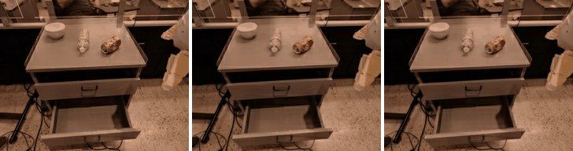
RT-1 evaluation
“open top drawer”
+2.12 dBGround truthFull ContextReCAP
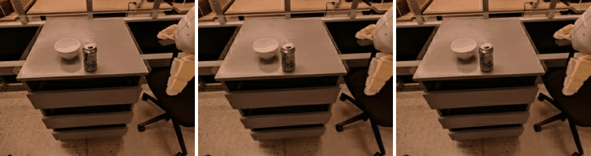
RT-1 evaluation
“pick rxbar chocolate from bottom drawer and place on counter”
+1.54 dBGround truthFull ContextReCAP
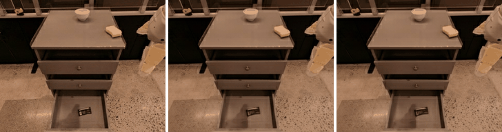
CALVIN validation
“go slide the pink block to the left”
+5.23 dBGround truthFull ContextReCAP
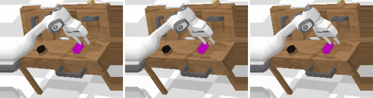
CALVIN validation
“grasp the handle of the drawer, then close it”
+4.75 dBGround truthFull ContextReCAP
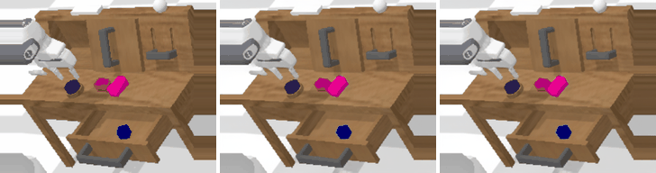
CALVIN validation
“go towards the red block in the drawer and grasp it”
+4.61 dBGround truthFull ContextReCAP
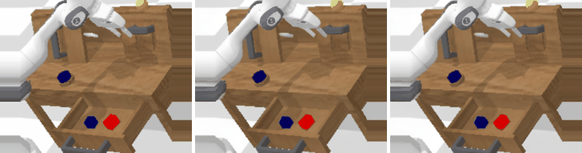
LIBERO-90 held-out task
“pick up the alphabet soup and put it in the basket”
+6.04 dBGround truthFull ContextReCAP
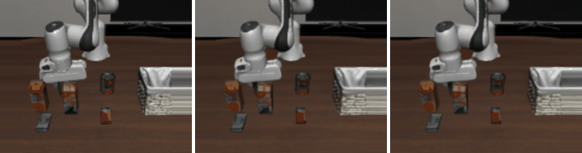
LIBERO-90 held-out task
“pick up the book and place it in the right compartment of the caddy”
+3.92 dBGround truthFull ContextReCAP
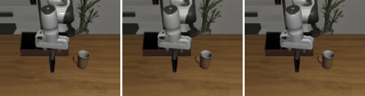
LIBERO-90 held-out task
“put the chocolate pudding to the right of the plate”
+2.61 dBGround truthFull ContextReCAP
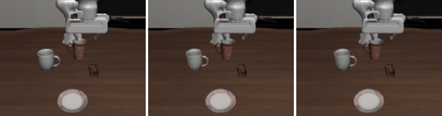
Citation
BibTeX
@misc{wu2027recap,
title = {Efficient Training-Free Context Scheduling for Long-Horizon Robot Video World Models},
author = {Anonymous},
year = {2027}
}